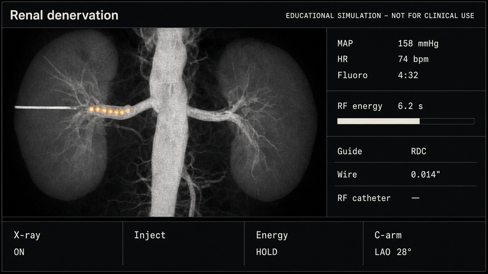

RDN fluoroscopy spike
Educational mockup only. Left: AI plate + calibrated overlays. Right: same state, procedural 2D (cath-style). Shared controls.
Plate + masks

Procedural 2D
Inject L renal
Advance wire
RF energy
LAO
28
°
Dwell
MAP stub
158
mmHg